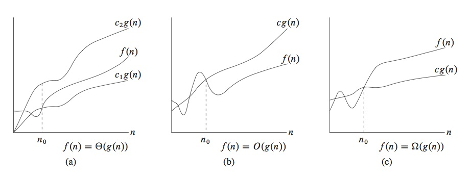

Introdução a Algoritmos |
É permitida a duplicação ou reprodução, no todo ou em parte, sob quaisquer formas ou por quaisquer meios (eletrônico, mecânico, gravação, fotocópia, distribuição na Web ou outros), desde que seja para fins não comerciais.
Este livro provê uma introdução ao estudo de algoritmos, apresentando introdução a estruturas de dados básicas, algoritmos de pesquisa e de ordenação e noções de análise de complexidade de algoritmos.
Um algoritmo pode ser visto como uma função, no sentido de que mapeia cada valor de de (um conjunto de valores de) entrada um único valor de (um conjunto de valores de) saída.
A diferença que existe entre o conceito usual de função é a notação usualmente empregada para especificação da sequência de passos. Em computação, é usual o emprego de uma notação ou linguagem imperativa, ao passo que usualmente definições de funções empregam uma notação mais declarativa, ou funcional.
Um algoritmo pode ser descrito usando-se diferentes abordagens e notação. Neste livro, vamos descrever algoritmos tanto em notação funcional quanto em notação imperativa. A descrição em notação funcional poderá ser desconsiderada em cursos que desejam abordar apenas o paradigma de programação imperativo. No entanto, a descrição funcional muitas vezes contribui para melhor compreensão da versão imperativa. A notação funcional utilizada aqui é a linguagem HaskellȦ notação imperativa é um pseudo-código semelhante às linguagens C, Pascal ou Java. Usamos endentação para indicar aninhamento no pseudo-código, sendo comandos, assim como campos internos em definições de tipos, separados por mudança de linha, em vez de serem usadas chaves com comandos terminados por ponto-e-vírgula.
A notação funcional será explicada sempre que necessário, isto é, sempre que houver alguma possibilidade de dúvida. Uma descrição sucinta da linguagem Haskell é incluída no Apêndice ??, que deverá ser lido pelo leitor não familiarizado com essa linguagem. Descrições mais completas de Haskell podem ser encontradas, por exemplo, em [, , , ].
Considere o problema de ordenação, especificado formalmente como a seguir (um problema computacional especifica a relação que deve existir entre a entrada e a saída):
Entrada: sequência de elementos S0.
Saída: sequência de elementos ordenada S tal que S é uma permutação de S0.
Uma sequência a1, …, an é ordenada se ai ≤ ai+1 para i=1,…, n−1.
Uma permutação é uma redisposição dos elementos em uma certa sequência. Por exemplo, existem 6 permutações distintas dos elementos 1,2,3, que são: (1,2,3), (1,3,2), (2,1,3), (2,3,1), (3,1,2), (3,2,1).
Outra denominação, usada no contexto de palavras, é anagrama. Um anagrama é o resultado de rearranjar as letras de uma palavra ou frase para produzir uma nova palavra ou frase, usando cada uma das letras originais exatamente uma vez. Por exemplo, "ovo" é um anagrama de "voo".
Permutações ocorrem em diversas áreas da matemática e proeminentemente no estudo de algoritmos, particularmente de algoritmos ordenação.
O número de permutações de n elementos distintos é igual ao fatorial de n (usualmente escrito como n!), ou seja, o produto de todos os inteiros positivos menores ou iguais a n. Para ver isso, observe que existem n possíveis maneiras de escolher o primeiro elemento de uma permutação de n elementos. Para cada possível escolha do primeiro elemento, temos n−1 possíveis maneiras de escolher o segundo elemento da permutação. Portanto, temos n (n−1) maneiras de escolher os dois primeiros elementos. Temos então n−2 maneiras de escolher o terceiro elemento da permutação, ou seja, n(n−1)(n−2) possíveis maneiras de escolher os três primeiros elementos. E assim sucessivamente, até que reste apenas um último elemento, o que nos dá um total de n!=n(n−1)… 1 possíveis permutações distintas.
Um algoritmo para solução do problema de ordenação especificado acima, chamado de ordenação por inserção, é mostrado a seguir. Ele reflete o modo como um jogador de baralho usualmente ordena uma sequência de cartas em suas mãos (por exemplo, em um jogo de buraco).
|
Explicações sobre a notação funcional (usada em Haskell):
f x (aplicação funcional —
a base da programação funcional) é o mesmo que §f(x)§ (mas melhor
porque evita os parênteses).b:insert a x é o mesmo que b:(insert a x) : a aplicação funcional tem precedência sobre o uso de
2 + 3 | é equivalente a | (+) 2 3 |
b:x | é equivalente a | (:) b x |
f x y | é equivalente a | x `f` y
|
insert e sort usam listas, um tipo recursivo, que é um
tipo de dado algébrico (chamado em Haskell de data) parecido com o
seguinte:
|
Um tipo de dado algébrico é a maneira como se definem somas (de tipos, sendo que só podem existir somas disjuntas de tipos), que modelam escolha (“ou”) de tipos de dados.
A declaração de
List acima especifica que um valor de tipo lista é polimórfico (o
uso da variável de tipo a indica que List é um construtor de
tipos que pode ser aplicado a qualquer tipo t, isto é,
podemos ter qualquer instância List t, para qualquer
tipo t), e que uma lista (um valor de tipo List t, para algum
tipo t) pode ser Nil (uma lista vazia) ou Cons v x, uma lista (não vazia) formada por um valor v
(cabeça da lista) e de um restante (ou rabo) da lista, x (que deve
ser do mesmo tipo da lista da qual é o restante).
O tipo de listas em Haskell (é parecido mas) difere ligeiramente do
tipo algébrico acima porque o construtor Nil é escrito como [] e o construtor Cons é escrito como um operador binário (:). Assim, em vez de escrever, Cons 1 Nil, escreve-se em
Haskell 1:[]. Além disso, pode-se escrever também [1,2,3] em vez de 1:2:3:[] — i.e. em vez de 1:(2:(3:[])).
|
define um construtor de tipos Pair, que tem dois parâmetros que
podem ser instanciados para quaisquer tipos t e t': por exemplo,
Pair Int Bool representa pares de valores de inteiros e
booleanos (o primeiro componente do par é um inteiro e o segundo um
valor booleano). É semelhante ao produto (Int,Bool). A
diferença é que valores do primeiro são construídos da forma Pair 1 True (especificando um valor inteiro e em seguida um
valor booleano), ao passo que valores do segundo são construídos da
forma (1,True) (especificando, entre parânteses, primeiro um
valor inteiro, seguido de uma vírgula, e depois um valor booleano).
Vamos mostrar que a definição de sort, acima, é correta, isto é, que o resultado é uma permutação ordenada (em ordem não decrescente) da lista original. Essa propriedade de correção pode ser expressa formalmente como
sort x = y implica sorted y e y `perm` x
onde sorted e perm são os seguintes predicados (funções de
contra-domínio Bool) sobre listas:
sorted :: [a] -> Bool retorna True se a lista dada como argumento está ordenada em ordem não decrescente, e retorna False em caso contrário.
perm :: [a] -> [a] -> Bool retorna True se a lista dada como primeiro argumento é uma permutação da lista dada como segundo argumento, e retorna False em caso contrário.
As definições desses predicados são apresentadas a seguir, onde perm faz uso de duas outras funções:
elem :: a -> [a] -> Bool retorna True se a o valor dado como primeiro argumento ocorre na lista dada como segundo argumento, e retorna False em caso contrário.delete :: a -> [a] -> [a] que retorna a lista obtida removendo-se, da lista dada como segundo argumento, a primeira ocorrência do valor dado como primeiro argumento, retornando a lista original caso este valor não ocorra na lista.
|
Explicações sobre a notação funcional (usada em Haskell):
&& e || são operadores binários lógicos de
conjunção e disjunção, respectivamente.delete usa guardas, que são expressões
booleanas usadas na definição de funções. Para cada chamada de
função, a primeira (na ordem textual) guarda cuja avaliação retorna
True define o resultado da chamada da função, pela avaliação da
expressão associada a essa guarda (que segue o símbolo =). Por
exemplo, a guarda na definição de delete é equivalente a:
if a==b then x else b:delete a x.Prova da correção de sort: A prova é por indução sobre a estrutura de construção de listas (ou sobre o comprimento da lista). O caso base, correspondente à lista vazia, pode ser provado diretamente. O caso indutivo é obtido como consequência
dos seguintes lemas:
a,x,
(sorted x) implica (sorted (insert a x))a,x,
(sort x) `perm` x implica
(insert a (sort x)) `perm` (a:x)
A versão imperativa usa o próprio arranjo para a ordenação (nenhum outro arranjo ou estrutura de dados auxiliar) e a seguinte ideia:
insereA[j]no arranjo ordenado deA[1]atéA[j-1], dej=2até o tamanho do arranjo
A ideia dá origem ao seguinte algoritmo, escrito em pseudo-código como (note que endentação no pseudo-código indica aninhamento na estrutura de blocos):
|
A correção do algoritmo advém de que o invariante, especificado bastante informalmente como:
— no início da execução de cada iteração do comandofor, o sub-arranjoA[1..j-1]contém os elementos que estavam originalmente nesse sub-arranjo, mas de forma ordenada —
é verdadeiro no início (antes da execução da primeira iteração do
for), antes e após cada iteração, e no final, quando então a
terminação garante a correção do algoritmo (ordenamento de todo o
arranjo).
É importante observar que a transformação dessa prova informal em uma prova formal é relativamente muito mais difícil do que no caso funcional.
No próximo capítulo vamos introduzir introduzir a notação e os conceitos principais usados para análise da complexidade (eficiência) de algoritmos, para que possamos analisar a complexidade de algoritmos (começando pela complexidade dos algoritmos apresentados neste capítulo).
Programas de computador estão sendo usados cada vez mais, nas mais diversas áeras. Além disso, a ciência da computação tem contribuído e influenciado inúmeras áreas científicas, como a lógica, a matemática, a física etc.
Em computação, não nos preocupamos apenas com a correção de algoritmos — o fato de que um algoritmo computa o resultado especificado, para cada instância dos dados de entrada — mas também nos precupamos com a sua eficiência, ou complexidade. A A eficiência de um algoritmo refere-se, usualmente, ao tempo gasto na execução do mesmo, mas pode também ser referente ao espaço, ou quantidade de memória, usado durante a sua execução.
A eficiência, ou complexidade, de um algoritmo é medida como uma função de uma medida que especifica o tamanho da entrada. Dizemos que o tempo de execução de um algoritmo tem ordem de complexidade polinomial, se a variação do seu tempo de execução com o tamanho n da entrada é limitado superiormente por uma função polinomial nk, onde k é um valor constante, que independe de n. Existem problemas – considerados difíceis – para os quais nenhum dos algoritmos conhecidos para sua solução tem tempo de execução de complexidade polinomial. Algoritmos conhecidos para esses problemas difíceis têm ordem de complexidade exponencial, ou seja, tempo de execução limitado superiormente por uma função kn, onde n é o tamanho da entrada e k é um valor constante, que independe de n.
O tempo de execução de um algoritmo é medido em termo do número de passos de execução do algoritmo. Cada passo de execução corresponde a uma instrução ou operação atômica, relevante no problema em questão, e que é executada em um intervalo de tempo constante. Por exemplo, o tempo de execução de um algoritmo de comparação, tal como o apresentado na Seção 1.2, pode ser medido como o número de comparações entre elementos da sequência, até que a sequência seja ordenada. Essa maneira de medir o tempo de execução abstrai do tempo específico gasto para execução de um passo, permitindo a comparação de eficiência de algoritmos independentemente da máquina em que são executados.
O tempo de execucão de uma sequência de k passos é a soma dos tempos de execução de cada passos, ou, mais simplesmente, o número tde passos k. A execução de determinadas construções usadas na definição de algoritmos, como comandos de repetição ou chamadas de funções recursivas, resultam na execução de uma determinada sequência de passos repetidas vezes. Se uma sequência de k passos é executada n vezes, o tempo total de execução é, naturalmente, n× k.
Na maioria das vezes, estamos interessados em determinar o tempo de execução do algoritmo para o pior caso de uma entrada de certo tamanho. Isso é devido ao fato de que i) o pior caso é um limite superior (que nunca poderá ser ultrapassado), ii) para muitos algoritmos o pior caso ocorre bastante frequentemente e iii) frequentemente o pior caso representa valor próximo do caso médio, e iv) em geral, o caso médio é mais difícil de ser analisado, envolvendo técnicas de análise de probabilidades.
Além disso, em geral estamos interessados em determinar como se comporta a função de complexidade de um algoritmo à medida que a entrada tende para tamanhos muiro grandes. Por exemplo, se a função que expressa a variação do tempo de execução com o tamanho da entrada é f(n) = an2 + bn + c, onde a,b,c são constantes, dizemos que essa função tem ordem de complexidade n2, que é o termo mais significativo do polinômio f. Isso porque os termos de menor ordem no polinômio são relativamente pouco significantes para valores de n grandes. Além disso, ignora-se também a constante a do termo de maior ordem, pelo mesmo motivo de ser relativamente pouco significante para valores grandes. Dizemos que essa função f é de complexidade quadrática (o termo de maior ordem no polinômio que define a complexidade é n2). Em outras palavras, estamos interessados no comportamento assintótico da função de complexidade do algooritmo. A notação geralmente usada paradescrever a complexidade assintótica de algoritmos é apresentada a seguir.
O tamanho da entrada de um algoritmo é medido como um número natural natural – i.e. o domínio de funções de complexidade é igual ao conjunto dos naturais, ℕ) e o contra-domínio é o conjunto dos números reais positivos (ℝ+.
Seguimos a terminologia usual, que usa f(n) (digamos, por exemplo, lg n) para se referir na verdade à função f (em notação de λ-calculus, à função λ n → lg n). Temos:
|
Em palavras, f(n) é membro de Θ(g(n)) se f(n) sempre está entre c1g(n) e c2g(n), para determinados c1,c2, e para n suficientemente grande (i.e. a partir de algum n0). Isso é ilustrado na Figura 2.2(a).

Figura 2.1: Big-Θ, Big-O, Big-Ω notations
Como Θ(g(n)) é um conjunto, o correto seria escrever f(n) ∈ Θ(g(n)), mas é usual escrever f(n) = Θ(g(n)), um abuso de notação, que simplifica a notação. Escrevemos também f(n) ≍ g(n) (seguindo Minko Markov []) como sinônimo de f(n) = Θ(g(n)).
Por exemplo, temos:
Para mostrar isso, devemos determinar c1,c2,n0 tais que 0 ≤ c1(n2) ≤ an2 − bn ≤ c2(n2), para n≤ n0. Ou seja (dividindo por n2):
| c1 ≤ a − |
| ≤ c2 , para n≤ n0 |
Essa desigualdade pode ser satisfeita, para todo n≥ 1, tomando c1 ≤ a − b e c2 ≥ a.
Nesse caso, deveríamos ter c1n2 ≤ an, para n suficientemente grande, ou seja, c1n ≤ a, o que não acontece.
Nesse caso, deveríamos ter c2n2 ≥ an3, para n suficientemente grande, ou seja, c2 ≤ an, o que não acontece.
Θ(1) é usualmente usado em vez de Θ(n0), considerando-se claro, pelo contexto a variável usada como medida do tamanho da entrada.
A notação Θ limita assintoticamente uma função por limites superior e inferior. A notação O estabelece apenas um limite superior:
|
Em palavras, f(n) é membro de O(g(n)) se f(n) sempre é menor ou igual a cg(n), para algum c, e para n suficientemente grande (i.e. a partir de algum n0). A Figura 2.2(b) ilustra essa definição.
Assim como na notação Θ, usa-se f(n) = O(g(n)) em vez de f(n) ∈ O(g(n)).
Escrevemos também f(n) ≼ g(n) como sinônimo de f(n) = O(g(n)) (seguindo Minko Markov []).
Note que f(n) ≍ g(n) implica f(n) ≼ g(n), mas a implicação inversa não é verdadeira.
Por exemplo, an + b ≼ n2 mas an + b ⋠ Θ(n2).
Usando a notação O podemos frequentemente ter uma boa ideia do limite superior para o tempo de execução de um programa, pela inspecção de sua estrutura de repetição. Por exemplo, o aninhamento duplo do programa imperativo de ordenação por inserção, apresentado na Seção 1.2, indica um limite superior O(n2) para o pior caso do tempo de execução. O custo de cada comando interno ao comando while é O(1), as repetições for e while são controladas pelos índices i e j, que variam no máximo até n, e a repetição mais interna é executada no máximo uma vez para cada par de n2 valores (i,j).
Note que a notação O fornece um limite superior e, portanto, é válida para qualquer entrada. Isso não ocorre com a notação Θ, uma vez que podem existir entradas para as quais o algoritmo se comporta mais eficientemente. Por exemplo, O(n2) é válido para qualquer entrada do algoritmo de ordenação por inserção (é um limite superior), mas existem entradas para as quais o tempo de execução é linear, dado por Θ(n), especificamente, se a entrada já está ordenada.
Dizer que o tempo de execução do algoritmo de ordenação por inserção é O(n2) significa, portanto, que existe uma função f, em O(n2), tal que, para qualquer entrada e qualquer n, o tempo de execução do programa para essa entrada é limitado a f(n) – não significa que a variação do tempo de execução do algoritmo para uma entrada particular varia quadraticamente com o tamanho da entrada, mas que pode variar no máximo quadraticamente com o tamanho da entrada.
A notação Ω limita assintoticamente uma função por um limite inferior:
|
Em palavras, f(n) é membro de Ω(g(n)) se f(n) sempre é maior ou igual a cg(n), para algum c, e para todo n suficientemente grande. Isso é ilustrado na Figura 2.2(c)
Assim como na notação Θ, usa-se f(n) = Ω(g(n)) em vez de f(n) ∈ Ω(g(n)).
Escrevemos também f(n) ≽ g(n) como sinônimo de f(n) = Ω(g(n)) (seguindo Minko Markov []).
Das definições, é fácil ver que, para quaisquer funções f,g, temos f(n) ≍ g(n) se e somente se f(n) ≼ g(n) e f(n) ≽ g(n).
A notação Ω estabelece um limite inferior, e envolve, assim, análise do comportamento do algoritmo para o melhor caso dos dados de entrada. Não consideraremos análises de comportamento de algoritmos no melhor caso neste livro, e a notação Ω terá assim aplicação limitada, sendo usada mais como complementação à notação O.
Em equações do tipo n = O(n2), a notação O significa n ∈ O(n2).
Em geral, no entanto, a ocorrência da notação assintótica expressa uma função qualquer, anônima, para a qual não há interesse em especificar um nome. Por exemplo, an2 + bn + c pode ser expressa como an2 + Θ(n), siginificando an2 + f(n), onde f(n) é um membro de Θ(n), no caso bn + c. Continuando nesse sentido, an2 + Θ(n) pode ser expressa como Θ(n2).
Essas abreviações são usadas para evitar ter que escrever em fórmulas funções que correspondem a termos de menor grau.
Como exemplo de uso de notação assintótica, temos: O(2O(lg n))=nO(1). O uso da notação O nessa fórmula expressa supressão de constantes. Note que n ≼ 2lg n, e portanto, para qualquer constante c, temos: nc ≍ 2c lg n, e O(2O(lg n))=nO(1) é outra forma de expressar essa igualdade.
Define-se o(g(n)) para indicar que trata-se de uma aproximação assintótica estrita:
|
Em palavras, f(n) é membro de O(g(n)) se f(n) sempre é estritamente menor que cg(n), para todo c, e para n suficientemente grande (i.e. a partir de algum n0). Isso é equivalente a:
| limn→∞ |
| = 0 |
Analogamente, a notação ω indica um limite inferior que é assintoticamente estrito (ω está para Ω assim como o está para O):
|
Isso é equivalente a:
| limn→∞ |
| = 0 |
Escrevemos também f(n) ≻ g(n) como sinônimo de f(n) = o(g(n)), e f(n) ≺ g(n) como sinônimo de f(n) = ω(g(n)) (seguindo Minko Markov []).
Por exemplo, para qualquer a>0, an2 ≻ n mas an2 ⊁ n2.
Para todas as relações R iguais a ≍, ≼, ≽, ≺, ≻, a seguinte transitividade ocorre:
| f(n) R g(n), g(n) R h(n) implicam f(n) R h(n) |
Ocorre também reflexividade para R = ≍, ≼, ≽:
| f(n) R f(n) |
Para ≍ ocorre simetria (mas não para as demais relações):
| f(n) ≍ g(n) se e somente se g(n) ≍ f(n) |
Para ≽ e ≼, e ≻ e ≺, temos:
|
Essas propriedades são similares às verificadas para as relações de igualdade e desigualdade entre números reais, motivam o uso das notações semelhantes para funções e motivam chamar f de assintoticamente menor que g se f(n) = o(g(n)), f de assintoticamente maior que g se g(n) = ω(f(n))), e analogamente para (≍ e Θ, assintoticamente igual), (≼ e O, assintoticamente menor ou igual a) e (≽ e Ω, assintoticamente maior ou igual a).
Um polinômio de grau k, sendo k inteiro não negativo, é uma função da forma:
| aini |
onde ai são constantes inteiras, chamadas de coeficientes do polinômio, e ak > 0.
Seja k uma constante inteira positiva. Dizemos, de uma função f sobre os naturais, que:
lg indica logaritmo na base 2; usamos log para especificar a base, de forma que lg n = log2 n. A base de logaritmos em complexidade algorítmica não é muito relevante, pois, para quaisquer constantes inteiras a,b,c>0, temos: logb a = logc a/logc b.
lg lg k é abreviação de lg (lg k), e lg tem pouca precedência (só se aplica ao próximo termo em uma fórmula): lg n + k significa (lg n) + k.
Para quaisquer constantes inteiras a,b, se a>1 temos:
|
A equação 1 indica que toda função exponencial com uma base maior que 1 cresce mais rapidamente que qualquer função polinomial.
A segunda equação 2 (que vale também se a=1) indica que toda função logarítmica cresce mais lentamente que qualquer função polinomial.
Resposta: Sim. Pois 2n+1 = 2*2n. Constantes não interferem na ordem de complexidade (na definição de O, basta escolher a constante c adequadamente, neste caso podemos escolher qualquer c≥ 2).
Resposta: Não.
Suponha que sim. Deveríamos ter então c,n0 tais que 0≤ 2(2n) ≤ c2n, para n≥ n0. Dividindo por 2n — note: 22n=(2n)2 — obtemos: 2n ≤ c, para todo n≥ n0, o que é falso.
A função que recebe n e retorna 22n é chamada de duplamente exponencial.
A função ⌊ lg n ⌋ tem limite de complexidade polinomial?
Resposta: Sim.
⌊ x ⌋ < x + 1, e lg n ≼ n, e portanto ⌊ lg n ⌋ ≼ n.
Suponha k≥ 1, a > 0 e b > 1 constantes.
|
|
A primeira linha é consequência de limn→∞ (lg n)k/na = 0, para todo k e todo a>0.
A segunda linha é consequência de limn→∞ nk/bn = 0, para todo a e todo b>1.
sin n oscila (continuamente) entre 0 e 1, quando n cresce de 0 a ∞. Portanto, 21/2 e 2sin n não se relacionam (com as relações assintóticas acima).
2n/2/2n = 1/2n/2, e portanto 2n ≼ 2n/2.
Temos:
| lg (nlg b) | = lg b (lg n) | ≍ (lg n) |
| lg (blg n) | = lg n (lg b) | = ≍ (lg n) |
e, portanto, nlg b ≍ blg n.
Temos:
|
As duas linhas têm exatamente n termos, e cada termo do lado direito da primeira é menor que o termo correspondente da segunda linha, para n suficientemente grande. Logo, n! ≤ nn para n suficientemente grande.
As funções, aplicadas a n, são:
|
A notação lg* é definida a seguir. Considere primeiro que f(i) denota a função “f aplicada i vezes”, para i≥ 0:
| f(i) x = | ⎧ ⎨ ⎩ |
|
lg* é uma função que recebe um argumento n e retorna o menor i tal que lg(i) n ≤ 1, ou, em outras palavras, retorna quantas vezes se precisa aplicar lg para obter-se 1 ou menos:
| lg* n = min { i ∣ i≥ 0, lg(i) n ≤ 1 } |
Por exemplo,
| lg* 2 | = 1 | (lg(0) 2 = 2, lg(1) 2 = lg (lg(0) 2) = lg 2 = 1) | |
| lg* 3 | = 2 | (lg(0) 3 = 3, lg(1) 3 = lg 3, lg(2) 3 = lg (lg 3) = 0.6644…) | |
| lg* 22 | = lg* 4 | = 2 | (lg(0) 4 = 4, lg(1) 4 = lg 4 = 2, lg(2) 4 = lg 2 = 1) |
| lg* 5 | = 3 | (lg(0) 5 = 5, lg(1) 5 = lg 5 = 2.3219…, lg(2) 5 = lg 2.3219… = 1.2153…, …) | |
| … | |||
| lg* 222 | = lg* 16 | = 3 | |
| = lg* 17 | = 4 | ||
| … | |||
| lg* 2222 | = lg* 65536 | = 4 | |
| … | = lg* 65537 | = 5 | |
| … | |||
| lg* 22222 | = … | = 5 | |
| … |
Ou seja, lg* cresce muito lentamente. Só poderíamos escrever o próximo valor ( n6 = 222222 ) usando exponenciação: n5 = 22222 tem 19729 dígitos, mas n6 tem um número de dígitos extraordinário, “maior do que o número de átomos (≈ 1082) que se estima existir no universo que podemos observar” (i.e. o universo que se expande até 90 e poucos bilhões de anos-luz; 1082 é da ordem de (menor que) 2(10/3)× 82, que é muito menor que 265536). Note que 103 é aproximadamente igual (um pouco menor que) 210, e portanto 10k = 103 × (k/3) = (103)k/3, que é portanto da ordem de (210)k/3 = 210 × (k/3) = 2(10/3)× k.
Solução:
Isso pode ser mostrado tomando lg de n1/lg n. Temos que lg (n1/lg n) = (1/lg n) × lg n = 1 (e portanto n1/lg n = 2). Logo, 1 ≍ n1/lg n.
Direto. Pois 1 ≺ lg (lg* n) decorre de 1 < 2 * lg (lg* 4) — pela definição das relações (≺) e O, tomando n0 = 4, c = 2 e usando o fato de que lg (lg* n) é monotônica, i.e. cresce ou continua igual quando n cresce. O que é válido pois: 1 < 2 * lg (lg* 4) é o mesmo que 1 < 2 * lg 2, ou seja, 1 < 2.
Seja m = lg* n. Temos então que provar: lg m ≺ m.
lg m ≺ m é consequência de limn→∞ (lg n)/n = 0.
Nota: O fato de que esse limite é zero é conhecido, mas pode ser obtido usando a regra de l’Hôpital, como a seguir.
Usando ′ (diz-se: ’linha’) para denotar a derivada de uma função, a regra de l’Hôpital especifica que, para todas as funções f, g diferenciáveis em um intervalo aberto I exceto possivelmente em um ponto k ∈ I, se i) limx → kf(x)=limx → kg(x)=v, onde v = 0 ou v = ±∞, ii) limx→ kf ′(x)/g′(x) existe, e iii) g′(x)≠ 0 para todo x∈ I − { k}, então limx→ kf(x)/g(x) = limx→ cf ′(x)/g′(x).
Assim, para todo k>0, temos: limn→∞ (lg n)/nk é igual a limn→∞ (ln n/ln 2)/nk que, pela regra de l’Hôpital, usando o fato de que (ln n)′ = 1/n e (nk)′ = k × nk−1, obtemos limn→∞ (1/n × (ln 2) × k)/1, que é igual a 0. Ou seja, para todo k>0 temos:
|
| = 0 (3) |
Para mostrar que a derivada de ln é a função inversa (i.e. (ln n)′= 1/n), seja: y = ln x, ou seja, ey = x; derivando ambos os lados em relação a x, temos: ey (dy/dx) = 1, ou seja, x (dy/dx) = 1, isto é: dy/dx = 1/x.
Fim de Nota
Veja a variação de valores da função lg* (veja explicação acima). A diferença entre lg* n e lg* (lg n) é 1, ou seja, lg* (lg n) = (lg* n) − 1.
Consequência de m ≺ 2m (fazendo m = lg* n).
Para poder comparar mais facilmente, eliminamos a exponenciação tomando o logaritmo (aplicando lg) aos dois lados. Obtemos: lg* n ≺ lg (lg (lg n)). Como lg* n só cresce com o número de potências de 2 de uma torre de potências de 2 que expressa o valor de n, e como lg 2i = i, com n a partir de n5 = 22222, para o qual lg* n5 = 5 e lg (lg (lg n5)) = 222 = 16, teremos sempre lg* n menor que lg(lg(lg n)).
Com lg n = m obtemos lg m ≺ m1/2, que é consequência de (3).
Com lg n = m obtemos √m ≺ m, o que é verdadeiro (na definição de O, basta escolher n0 = 1, c = 1).
Com lg n = m obtemos m ≺ m2, o que é verdadeiro (na definição de O, basta escolher n0 = 1, c = 1).
Com lg n = m obtemos m2 ≺ 2m/2, i.e. 4m2 ≺ 2m, o que é consequência de limn→∞ nb/an = 0, para todas as constantes a e b tais que a>1.
Temos: √2lg n = 2lg n/2. Assim, usando o fato de que, para todo k,f,g, kf(n) ≺ kg(n) se e somente se f(n) ≺ g(n), obtemos o resultado desejado se e somente se √2 lg n ≺ lg n/2, o que é verdadeiro pois √lg n ≺ lg n.
Temos: √2lg n ≺ n se e somente se 2lg n/2 ≺ n se e somente se 2lg √n ≺ n se e somente se √n ≺ n, o que é verdadeiro.
Aplicando lg, obtemos: lg n ≍ lg n.
Podemos escolher por exemplo n0 = 1, c=2 na definição de O.
Usando a aproximação de Stirling:
| n! = | √ |
| ( |
| )n (1 + Θ( |
| )) |
e aplicando lg a ambos os lados, obtemos: lg (n!) ≍ lg (√2π n) + n lg n − n lg e, que é assintoticamente igual a n lg n:
| lg (n!) ≍ n lg n (4) |
Podemos escolher por exemplo n0 = 2, c=1 na definição de O.
Pois 4lg n = (22)lg n = 22lg n = 22 lg n = 2lg (n2) = n2.
Podemos escolher por exemplo n0 = 1, c=2 na definição de O.
Aplicando lg a ambos os lados, obtemos lg (n3) ≺ lg ((lg n)!). Com m = lg n, obtemos: 3 m ≺ lg (m!) (pois lg (n3) = 3 lg n).
Usando (4) obtemos: 3 m ≺ m lg m, que significa 3 ≺ lg m, que é verdadeiro.
É equivalente a m!≺ mm, com m = lg n. O que é verdadeiro, pois:
| lim |
| = 0 |
Vamos usar o fato de que logb an = n logb a, para todo a,b,n.
Aplicando lg ao lado esquerdo, obtemos:
| lg ((lg n)lg n) = lg n × lg (lg n) |
Aplicando lg ao lado direito, obtemos:
| lg (nlg (lg n)) = lg (lg n) × lg n |
Aplicando lg ao lado esquerdo, obtemos: lg n × lg (lg n).
Aplicando lg ao lado direito, obtemos: n lg 3/2.
Temos n ≺ lg (lg n) e lg (lg n) ≺ lg n × lg (lg n).
Por transitividade da relação (≺), obtemos: n ≺ lg n × lg (lg n), e portanto n lg 3/2 ≺ lg n × lg (lg n).
O resultado é então obtido pelo fato de que:
| Para toda função f,g, temos: lg f(n) ≺ lg g(n) se e somente se f(n) ≺ g(n) (5) |
Consequência de: limn→∞ (3/2)n/2n = limn→∞ (3/4)n = 0.
Com m = 2n (n = lg m), obtemos: m ≺ m lg m.
Temos: 2n ≺ n! e, por transitividade, uma vez que n 2n ≺ 2n, obtemos n 2n ≺ n!.
Consequência de: (n+1)! = (n+1) × (n!).
Aplicando lg a ambos os lados, obtemos, usando (4): (n+1) lg (n+1) ≍ n lg n, o que é verdadeiro. Obtemos o resultado usando (5).
Aplicando lg a ambos os lados, obtemos, usando (4): n lg n ≺ lg (2n), o que é verdadeiro. Obtemos o resultado usando (5).
Temos: 2n+1 = 2 × 2n e portanto 22n+1 = 22× 2n = 22n × 22n.
Este capítulo aborda listas e árvores, suas representações em um computador e operações básicas sobre essas estruturas de dados.
Uma lista é uma estrutura de dados comumente usada em computação e pode ser definida recursivamente como a seguir. Uma lista de elementos de
determinado tipo t é ou i) vazia ou ii) constituída de um elemento de tipo t e um uma lista de elementos do mesmo tipo t (denominada cauda ou resto da lista).
Em uma linguagem como Haskell, que provê suporte à definição de tipos de dados recursivos, o tipo lista pode ser definido como:
|
O tipo de dado List a é um tipo recursivo, sendo Nil e Cons os construtores de valores desse tipo. Além disso, List a é um tipo polimórfico: a variável de tipo a pode ser instanciada para um tipo t qualquer, permitindo assim a definição de listas com elementos de desse tipo t. Por exemplo, (Cons 1 (Cons 2 (Cons 3 Nil))) é uma lista de tipo List Int e (Cons True (Cons False Nil)) tem tipo List Bool.
A linguagem Haskell provê uma notação especial para a criação de valores de tipo lista: [] é usado em lugar de Nil, e o construtor infixado (:), associativo à direita, em lugar de Cons. Por exemplo, a lista Cons 1 (Cons 2 (Cons 3 Nil)) seria representada como (1:2:3:[]).
Além disso, uma lista pode ser representada simplesmente escrevendo-se os seus elementos da lista entre colchetes, separados por vírgulas. Ou seja, a lista \inh{(1:2:3:[]} pode ser escrita, mais simplesmente, como [1,2,3].
Em linguagens como C, uma lista pode ser representada por meio de registros (também chamados de "estruturas", em C) e ponteiros (ou apontadores), tal como ilustrado no exemplo a seguir, que define uma lista de elementos de tipo int. Linguagens como C, que não provêm suporte para polimorfismo, requerem a definição de tipos lista distintos para cada tipo particular de elementos.
|
Uma definição de registro, em C, é introduzida pela palavra-chave struct, seguida do nome do registro – neste caso, ListaDeInteiros. O registro possui dois campos: um campo de tipo int e nome elem, e um campo de nome r, que é um ponteiro para valores do próprio tipo ListaDeInteiros.
A manipulação de valores de tipo lista em C é bem mais trabalhosa. A falta de suporte para definição e uso de tipos recursivos e polimórficos torna a programação mais difícil e demorada e o código menos legível e mais sujeito a repetições e a ocorrências de erros. Por exemplo, para criar um valor de tipo ListaDeInteiros, com os elementos 1,2,3, é necessário código como o seguinte:
|
Em Haskell, o acesso a um valor v, em uma lista x, requer acesso a
todos os elementos anteriores a v em x. De fato, a representação interna de listas definidas em Haskellé feita por meio de ponteiros, mas a manipulação de ponteiros é gerada automaticamente pelo compilador da linguagem, de acordo com o código do programa, em vez de ser feita diretamente pelo programador.
Uma maneira alternativa de representar listas é por meio de arranjos, especialmente em uma linguagem (como C) que não provê suporte a manipulação de valores de estruturas de dados recursivas. Utilizando essa forma de representação, a lista fica limitada a um número máximo de elementos, já que a defição de uma arranjo requer que o número de elementos do mesmo seja especificado a priori.
Em computação, pesquisar em geral significa determinar se um dado elemento está presente ou não em uma estrutura de dados. As subseções seguintes tratam de operações de pesquisa, inserção e remoção de elementos de listas, de acordo com a forma com que listas são representadas.
Em ambos os casos apresentados abaixo, a pesquisa em uma lista de n elementos tem complexidade O(n) no pior caso, pois envolve, possivelmente, comparação com cada elemento da lista.
A função elem, que determina se um dado valor é elemento de uma lista dada, pode ser definida como a seguir:
|
O tipo de elem, em Haskell, é um tipo polimórfico restrito: a restrição (constraint) (Eq a) indica que a variável de tipo a
não pode ser instanciada para qualquer tipo, mas apenas para um tipo
que é membro da classe de tipos Eq, ou seja, no caso, apenas para um
tipo para o qual exista definida uma operação de igualdade (==), para
valores desse tipo. É um erro de tipo chamar a função elem com um argumento de um tipo para o qual não é definida comparação de igualdade.
Nota:
A função elem, de fato, faz parte do módulo Prelude, importado
automaticamente por todos os módulos de programas Haskell, sem necessidade de comando ou cláusula explícita de importação. A definição de elem no Prelude é diferente da apresentada acima, e usa outras funções também definidas no Prelude, como mmap e foldr, que são ferramentas importantes para definição de outras funções em Haskell. A definição de elem contida no Prelude é apresentada a seguir:
|
A versão imperativa de elem definida a seguir recebe como argumento o valor a ser pesquisado, denotado pelo parâmetro a, juntamente com um apontador para uma lista (de tipo ListaDeInteiros), denotado pelo parâmetro l. O algoritmo retorna retorna um apontador para o elemento da lista l que é igual a a, caso o argumento esteja presente na lista, e retorna NULL em caso contrário.
|
Inserir um elemento no início de uma lista é uma operação de complexidade O(1).
A inserção de um elemento no início da lista é feita simplesmente, por meio do construtor de lista (:), ou seja:
| insert = (:) |
Na versão imperativa, é alocado um novo registro, de tipo ListaDeInteiros,
para armazenar o novo valor a ser inserido na lista, sendo retornada a lista resultante dessa operação.
|
Remover um elemento de uma lista é uma operação de complexidade O(n) no pior caso, pois é necessário procurar o elemento a ser removido.
A Seção 3.1.4 redefine o tipo de lista
encadeada para uma versão de listas duplamente encadeadas, e reescreve
as funções elem e insert, para definir delete por meio de uma
chamada à função elem, seguida de chamada a insert.
A versão funcional cria uma nova lista, que não tem o elemento passado como parâmetro:
|
A versão imperativa de delete, apresentada a seguir, não cria uma nova lista: usa um ponteiro – prev – para percorrer a lista até encontrar o elemento a ser removido e, quando este é encontrado, modifica a estrutura de encadeamento da lista, removendo este elemento.
|
…….....
Uma estrutura de dados Pilha caracteriza-se pelo fato de que as operações de inserção, acesso e remoção de elementos são feitas em apenas um de seus lados (ou extremidades). Essa política de uso é comumente chamada LIFO (do inglês, last-in first-out: o último a ser inserido é o primeiro a ser removido da pilha. Discutimos, a seguir, a implementação de uma Pilha, com as operações: i) criar pilha vazia, ii) empilhar elemento, iii) desempilhar elemento, iv) obter elemento do topo da pilha, e v) testar se pilha está vazia. É fácil ver que a ordem de complexidade de tempo de cada uma dessas operações é O(1).
Em Haskell, a implementação de Pilha é obtida diretamente das operações definidas sobre listas, isto é:
|
Em geral, vamos procurar simplificar o código de nossos programas, não tratando casos de erro, por motivos didáticos. Entretanto, em programas completos, não podemos esquecer de tratar todos os casos possíveis para os dados de entrada. O módulo Tipo abstrato Pilha, a seguir, implementa esse tipo abstrato, considerando todos esses casos possíveis para os dados de entrada das operações.
O módulo Pilha implementa o que é chamado em computação de um tipo abstrato de dados, que é um tipo com operações de criação,
modificação e consulta sobre valores desse tipo. Por exemplo, vazia é uma operação de criação (nesse caso, a única);
empilhar e desempilhar são operações de modificação; topo e estaVazia são operações de consulta.
Em uma definição de um tipo abstrato de dados, a definição de tipo e das operações (para criação, modificação e consulta) sobre valores do tipo devem ser contidas em um mesmo trecho de programa (em geral, um módulo), e a representação usada não é “visível” para quem usa valores do tipo. Ou seja, um tipo abstrato é constituído de um tipo, munido de um conjunto de operações sobre valores desse tipo. Qualquer outra operação sobre valores do tipo apenas pode ser implementada por meio dessas operações previamente definidas.
Para definir um tipo abstrato Pilha, em Haskell, usamos uma definição de um novo tipo, introduzida pela palavra-chave newtype. O tipo Pilha possui um único construtor de valores mkPilha (de mesmo nome do construtor de tipo). Esse mecanismo é usado para ocultar a representação do tipo abstrato: o construtor de que não é exportado pelo módulo em que o tipo é definido: o construtor de valores mkPilha não é exportado, apenas o construtor de tipos Pilha. Para melhor legibilidade, definimos também o tipo de cada uma das funções. Veja o código a seguir.
|
Na versão imperativa, consideramos uma pilha representada como um registro com dois campos: ∈topo e elems, sendo elems um arranjo de n elementos (indexado de 0 a n-1), e topo uma variável inteira, que indica o índice do último elemento inserido. As operações sobre a pilha podem ser implementadas como a seguir (desconsiderando-se os casos de erro: desempilhar de uma pilha vazia e empilhar em uma pilha cheia).
|
O comando with, usado no código acima, serve para tornar visíveis os nomes de campos de um registro: with r evita que se tenha que prefixar os nomes dos campos do registro inar com o nome do registro.
Em uma Fila, a inserção é feita de um lado e a remoção é feita do lado oposto da estrutura de dados – política de uso algumas vezes chamada de FIFO (first-in first-out: o primeiro a ser inserido é o primeiro a ser removido da fila.
Uma fila, com operações de i) criar fila vazia, ii) entrar (inserir elemento) na fila, iii) sair (tirar elemento) da fila, iv) obter primeiro elemento da fila, e v) testar se fila está vazia, pode ser implementada como se mostra a seguir.
Não é eficiente fazer acesso ao último elemento de uma lista em
Haskell. Por isso, a implementação padrão de filas por meio de listas usa
duas listas, frente e tras: elementos entram na lista tras e saem da lista frente. A função fila é usada na definição de entrar, para garantir o invariante de que, se frente está vazia, então tras está vazia (e, portanto, a fila está vazia).
|
Na versão imperativa, consideramos uma fila como um registro com campos inicio, fim e elems, sendo elems um arranjo de n elementos (indexado de 0 a n-1). Os índices do primeiro e do último elementos inseridos na fila são armazenados respectivamente nas variáveis inicio e fim.
A fila está vazia quando inicio == fim. A fila está cheia
quando inicio == fim + 1, isto é, a fila é circular: o
índice 0 segue o índice n-1.
As operações em uma fila podem ser implementadas como a seguir, desconsiderando-se casos de erro: sair de uma fila vazia e entrar em uma fila cheia. O operador %, usado na implementação, retorna o resto da divisão do primeiro operando pelo segundo.
|
Uma árvore pode ser vista como uma estrutura de dados recursiva, definida como sendo ou i) vazia (uma folha) ou ii) um nodo contendo um elemento e um certo número de ramos (ou nodos), que contêm sub-árvores:
|
Na definição acima, o construtor Leaf constrói uma árvore vazia, ou folha, e o construtor Node constrói uma árvore contendo uma informação de tipo a e um lista de subárvores.
Outra possível definição considera que a informação é armazenada nas folhas, em vez de nos nodos internos:
|
Uma árvore com exatamente duas sub-árvores (possivelmente vazias) é chamada de árvore binária e pode ser definida como:
|
Em linguagens que provêem suporte ao uso de ponteiros, mas não à definição e manipulação direta de tipos recursivos, a representação de árvores binárias pode ser feita com o uso de ponteiro como mostra o exemplo a seguir:
|
Os campos esq e dir de um nodo são ponteiros, possivelmente nulos,
para sub-árvores.
Para árvores não binárias, pode ser usada a seguinte representação, que podemos chamar de representação com primogênito-irmão-e-pai:
|
A representação da árvore da Figura 3.1 é mostrada na Figura 3.2.
xxxx
Figura 3.1: Árvore exemplo
yyyyy
Figura 3.2: Representação da árvore exemplo por valor do tipo ArvoreDeInteiros
Este documento foi traduzido de LATEX por HEVEA.